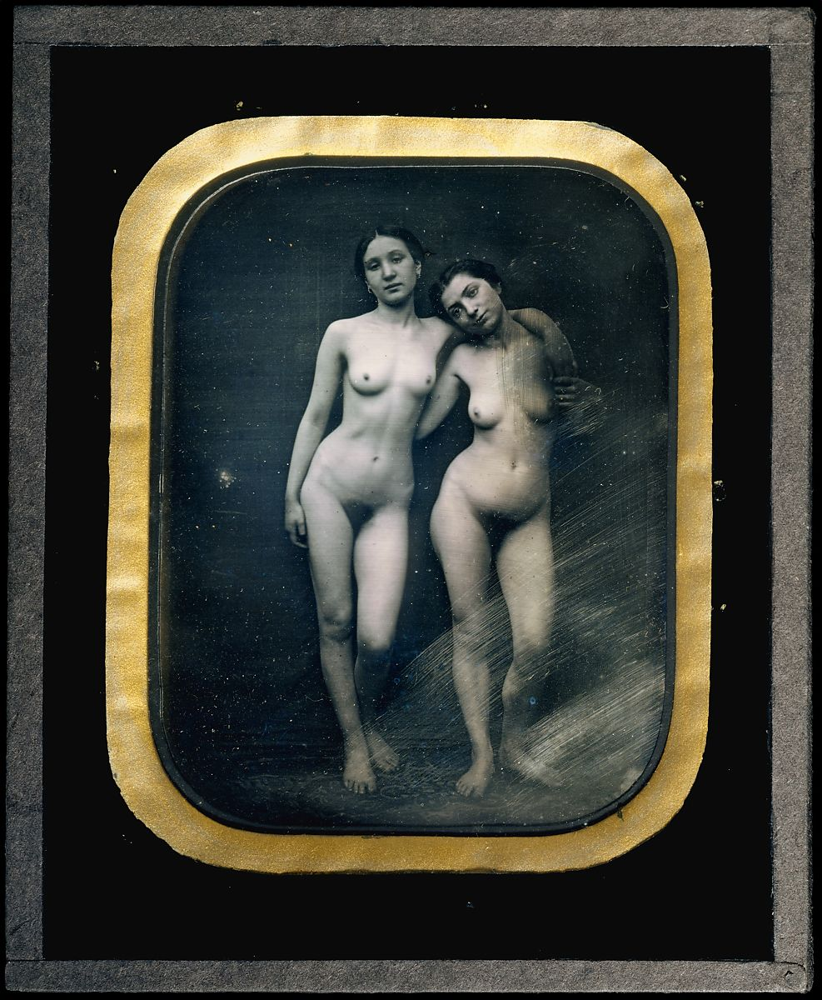

The fl∫apper dresses of the 1920s coexisted in couture and ready-to-wear, the latter often gaudy, the former continuing the linear interests of high-style dress of the 1910s. Molyneux was a designer of consummate good taste, walking a fine line between the refinements of couture style and a modernist aesthetic and the ambition to be socially and culturally advanced in the age of Anita Loos and Gatsby. Sequins in vertical stripes are overlaid with loose lengths of georgette picoted along the edges for a delicate shimmer on vertical filaments.

Félix-Jacques-Antoine Moulin
Two Standing Female Nudes
Although Moulin was sentenced in 1851 to a month in jail for producing images that, according to court papers, were "so obscene that even to pronounce the titles . . . would be to commit an indecency," this daguerreotype seems more allied to art than to erotica. Instead of the boudoir props and provocative poses typical of hand-colored pornographic daguerreotypes, Moulin depicted these two young women utterly at ease, as unselfconscious in their nudity as Botticelli’s Venus.
Nepal, Kathmandu Valley
Goddess of Dance (Nrtyadevi)
Polychromed wood sculpture from at least the tenth century survives in Nepal, in the form of both independent sculptures and architectural elements. This dancer, likely one of a pair, is a form of a Buddhist savior, a counterpart to such popular bodhisattvas as Avalokiteshvara in the form of Cintamani Lokeshvara, the wish-fulfilling jewel bearer. This goddess gestures with her lower hand, evoking her boon-granting power.
Titian (Tiziano Vecellio)
Venus and Adonis
Tales from Ovid’s Metamorphoses inspired Titian to paint what he called poesie, or poetry in paint. Here, Venus tries to stop her lover from departing for the hunt, fearing—correctly—that he would be killed. The mood of sensuality, conveyed by the beautiful depiction of Venus, seen from the back, enhances the viewer’s sense of the tragic end to this story, expressed through their exchanged glances and the frightened Cupid. Titian’s workshop made multiple versions of this composition, but this one is of exceptional quality and was painted by Titian himself.
Greek, Attic
Terracotta funerary plaque
In the latter sixth century B.C., the elaborate series of funerary plaques set into the walls of rectangular tombs were replaced by single plaques with holes for attachment. The chariot race, a recurring theme in Attic funerary art, may evoke the funeral games held in honor of legendary heroes, such as those in book 23 of the Iliad, when Achilles honored his deceased friend Patroklos.
British
Dress
By 1866 fashion had decreed that the fullness of the skirt hsould be gathered up somewhat at the back, and that an overskirt should be added to the full skirt. In 1868 the great expanse of the skirt narrowed considerably at the side, giving a much straighter silhouette in front; the fullness now moved to center back, where the primary shaping was provided by the bustle.
.jpeg)
.jpeg)
.jpeg)
.jpeg)